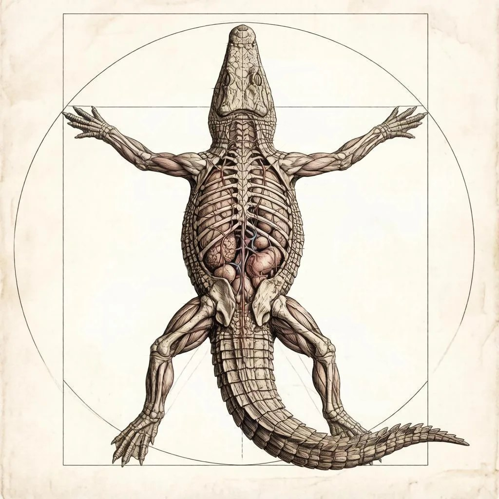
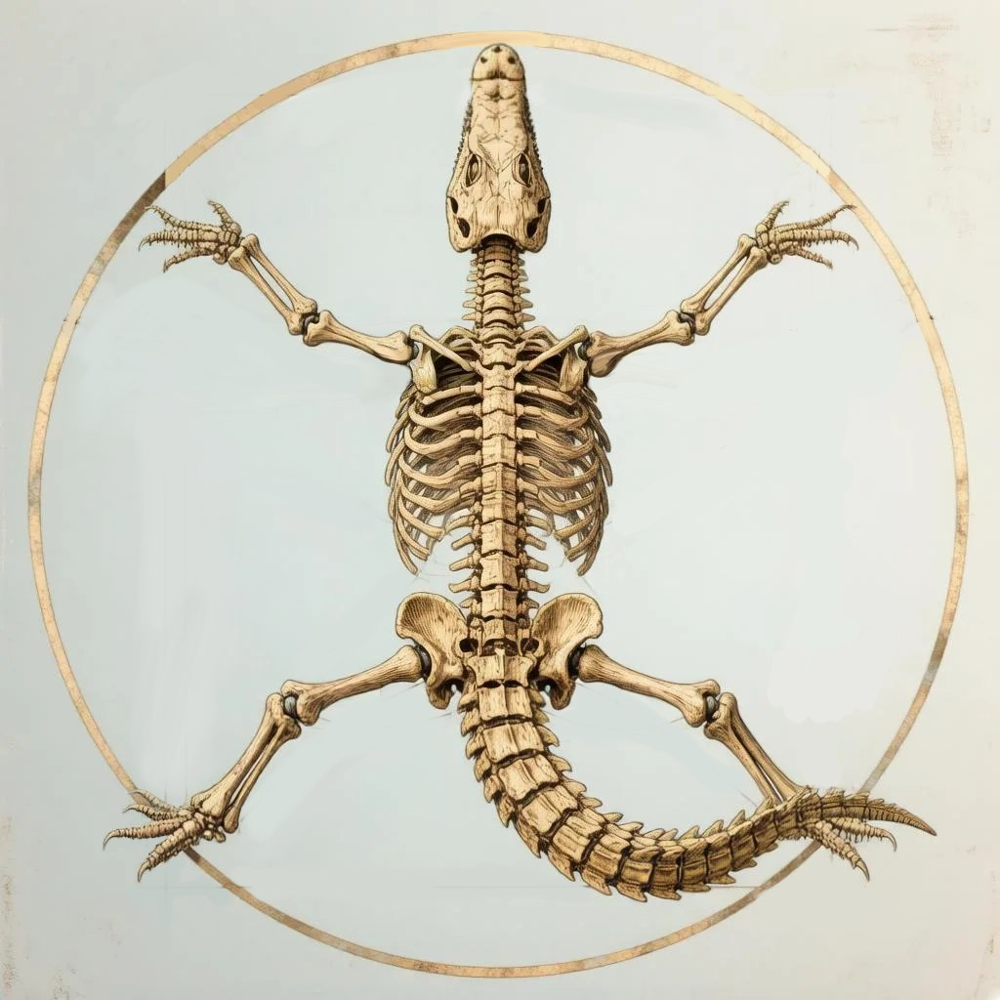

Строение
Нильский крокодил появляется на свет из яйца!
Да, как цыплёнок!
Размер
Размер: примерно как большое куриное или утиное яйцо, но чуть крупнее. Длина — около 8–10 см.
Форма
Овальная, немного вытянутая.
Кожистая оболочка
Тонкий слой под скорлупой. Он помогает сохранять влагу внутри яйца.
Цвет
Грязновато‑белый или бежевый, иногда с лёгким коричневатым оттенком.
Скорлупа
Не такая твёрдая,
как у куриного
яйца.
Она
кожистая,
гибкая
и немного
шершавая
на
ощупь.
Зародыш
Будущий крокодильчик.
Он прикреплён
к желтку
и постепенно растёт,
пока
не будет готов
вылупиться.
Желток
Питательная «заправка» для малыша. В нём много полезных веществ, которые помогают крокодильчику расти внутри яйца.
Белок
Воздушная камера
Небольшой «пузырёк» воздуха на тупом конце яйца. Перед вылуплением малыш использует этот воздух для первого вдоха.

Голова
Тело крокодила покрыто прочной кожей с твёрдыми роговыми щитками. Эти щитки как доспехи - они защищают от царапин и укусов. Цвет кожи — тёмно‑зелёный или коричневыйс тёмными пятнами — помогаетпрятаться средиводорослей и камней. На спинещитки крупнее, а на животе — мягчеи тоньше.
Хвост — главный двигатель крокодила в воде. Он длинный, сильный и сплюснут с боков. Когда крокодил плывёт, он изгибает хвост из стороны в сторону, как рыба. Ещё хвост помогает ему поворачивать и даже прыгать из воды, чтобы поймать добычу.
Кожа
Хвост
Тело крокодила покрыто прочной кожей с твёрдыми роговыми щитками. Эти щитки как доспехи - они защищают от царапин и укусов. Цвет кожи — тёмно‑зелёный или коричневыйс тёмными пятнами — помогаетпрятаться средиводорослей и камней. На спинещитки крупнее, а на животе — мягчеи тоньше.
Хвост — главный двигатель крокодила в воде. Он длинный, сильный и сплюснут с боков. Когда крокодил плывёт, он изгибает хвост из стороны в сторону, как рыба. Ещё хвост помогает ему поворачивать и даже прыгать из воды, чтобы поймать добычу.
Лапы
У крокодила четыре короткие, но сильные лапы. На передних — по 5 пальцев, на задних — по 4, и между ними есть небольшие перепонки. Это помогает ему грести в воде. На суше крокодил ходит медленно, а в воде плывёт быстро, помогая себе мощным хвостом.
Органы чувств
Глаза с вертикальными зрачками видят в темноте и замечают движение издалека. Ноздри закрываются специальными клапанами под водой — так вода не попадает внутрь. Уши тоже закрываются складками кожи, когда крокодил ныряет. На морде и вокруг пасти есть чувствительные бугорки — они улавливают малейшие колебания воды. Благодаря им крокодил чувствует, где плывёт рыба, даже если ничего не видит


Внутренние особенности
Мощные челюсти создают огромное давление при укусе — нильский крокодил один из самых сильных хищников планеты. Сердце у крокодила особенное: оно может замедлять работу, чтобы долго находиться под водой без воздуха. Крокодил может задерживать дыхание на 2 часа — это помогает ему незаметно подкрадываться к добыче.
ИНТЕРЕСНЫЕ ФАКТЫ
Длина взрослого нильского крокодила может достигать 5–6 метров — это как два автобуса, поставленных друг за другом. Весит такой гигант до 700 кг — столько же, сколько маленький автомобиль. Кожа крокодила не потеет: чтобы остыть, он открывает пасть на берегу — это называется «зевком». Крокодилы глотают мелкие камни — они помогают переваривать пищу и делают крокодила устойчивее в воде.